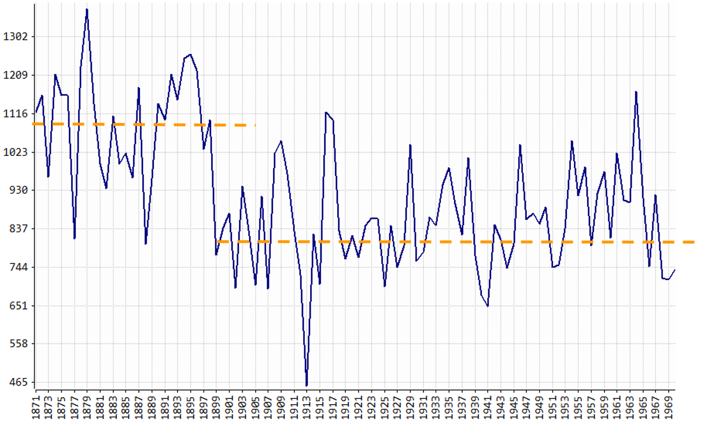
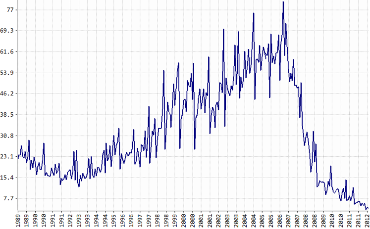
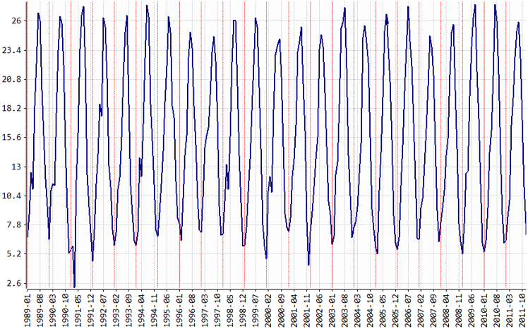

7.1 ¿Qué es una Serie Temporal?
- Si la serie es sobre una característica se dice que es univariante o escalar.
- Si la serie es sobre dos o más características se dice que es multivariante o vectorial.
El estudio de las series temporales permite:
- entender mejor el mecanismo de generación de los datos, que puede no ser claro inicialmente en una investigación y/o
- hacer pronósticos sobre el futuro, es decir: previsiones.
Las previsiones se utilizan en forma constante en diversos campos: economía, finanzas, marketing, medio ambiente, ingeniería, etc. En general, las previsiones proporcionan una guía para las decisiones que deben tomarse.
Algunos ejemplos de uso de las previsiones son:
En Planeamiento y Control de Operaciones. Las decisiones de producción de un artículo con base en los pronósticos de ventas. Es posible por ejemplo, detectar una disminución en la tendencia de ventas que conlleve a reducir la producción, o al contrario.
En Marketing. La decisión de invertir en publicidad puede depender de prever las ventas.
En Economía. Las decisiones del Banco de España, por ejemplo para el control de la inflación, requieren la previsión y el examen del comportamiento de ciertas variables macroeconómicas, como el PIB, la tasa de desempleo, el IPC, las tasas de inter?s a distintos plazos, activas y pasivas.
En Turismo. La previsión del de número de turistas mensuales para determinar la demanda hotelera.
En Epidemiología y Medio Ambiente. La vigilancia de los niveles de contaminantes en el aire tiene como herramienta fundamental las series de tiempo. Pero adicionalmente el efecto de estos niveles sobre la salud.
Ejemplo: Caudal Anual del Río Nilo. 1871–1970. Anual.

Ejemplo: España: Viviendas Iniciadas. Ene-1989/Jun-2012. Mensual. Miles de Viviendas

Ejemplo: Madrid: Temperatura Media en el Parque del Retiro. Ene-1989/Dic-2011. Mensual.

En las secciones siguiente se describen brevemente algunos conceptos necesarios para la modelación básica de series temporales.
Todas las series temporales tienen características particulares. Asi por ejemplo, las series pueden: